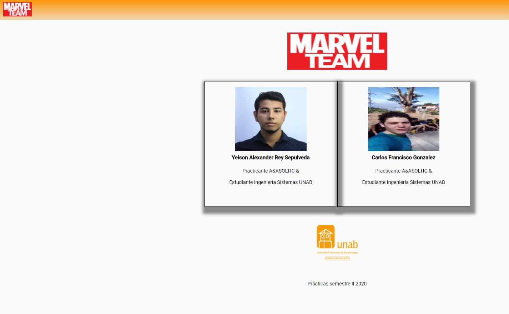
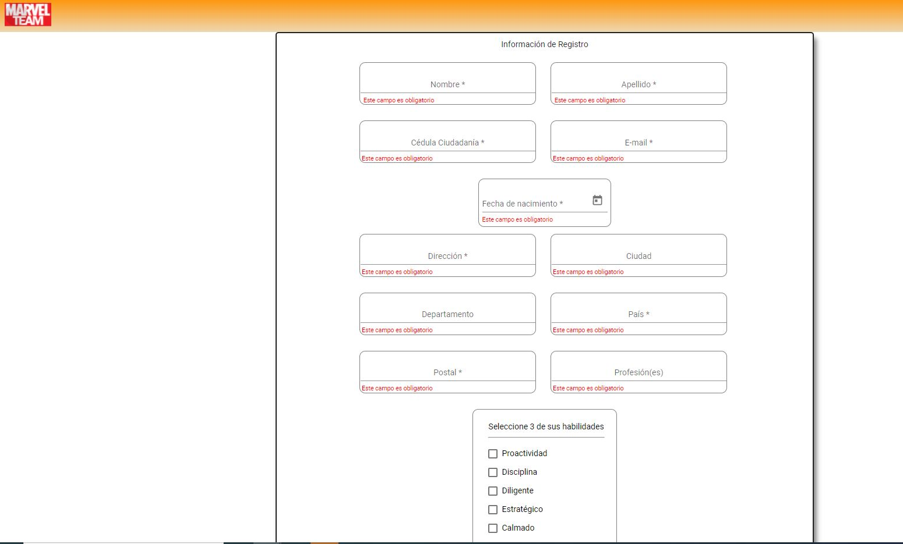
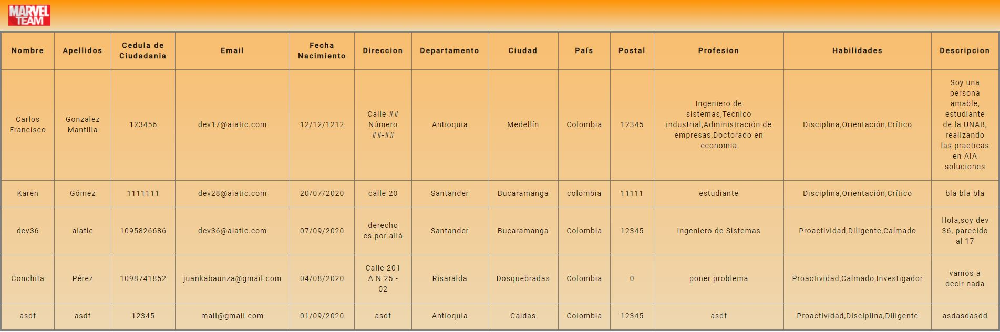

Manual de usuario¶
Principales requsitos para la pagina web¶
-Acceso a internet
-Navegador que soporte HTML5
-Habilitacion y acepto de uso de cookies para la pagina web
Caracteristicas de la pagina web¶
La pagina se encuentra desarrollada en Angular10, lenguaje TypeScript
Estilos usados con SCSS
Hosting en web app de Firebase By Google
Base de datos en la nube usando Firebase Cloud
Uso del Storage ofrecido por Firebase-Storage
Modo de uso¶
1.Barra de navegación¶

Barra de navegación para aplicación web

Barra de navegación para aplicacion movil
En la barra de navegación se encuentra un diseño responsivo, de colores en gradiente de anaranjado a blanco. Para aplicación web se encuentra el logo del equipo en la esquina superior izquierda la cual permite activar el menu de navegación. Para aplicación movil el logo se encuentra centrado y se añade un «boton menu» en la parte superior izquierda, que permite acceder al menu de navegación
2.Menu de navegación¶

Menu de navegación
El menu de navegacion permite de una manera practica ver y acceder a las funcionalidades de la pagina, en ella encontramos el logo del equipo que permite desplazarnos a la pagina principal, los items de registro, iniciar sesión y video para el caso de no haber iniciado sesión, y cuando se ha iniciado sesión se muestran los items de registros, perfil, video y salir
3.Conocer la pagina principal¶
Pagina principal
La pagina principal presenta el logo del equipo Marvel, centrado, debajo de este se encuentran las fotos, nombres y cargos de los desarrolladores, debajo se encuentra el logo de la universidad donde estan realizando sus estudios, como realización de este proyecto para las Practicas 2020.
4.Realizar el registro¶
Pagina de Registro
Para iniciar el proceso de registro, podemos acceder desde el menu de navegación, dando click al iteme Registro, se deben proporcionar los datos en los campos requeridos, se permite maximo un registro por cedula de ciudadania y correo electronico, una vez se haya finalizado de rellenar todos los campos, se habilitara el boton de registrarse, al dar clic sobre este, se notificara si el registro fue exitoso o si ha ocurrido algun error.
5.Iniciar sesión¶

Pagina web de inicio de sesión

Pagina movil de inicio de sesión
Una vez realizado un registro exitoso, se puede iniciar sesión en la aplicación, en el menu, dando click al item iniciar sesión, donde es necesario proporcionar el correo y dar clic en el botón «INICIAR SESIÓN», posteriormente se enviara un link al correo electronico suministrado que permitira acceso a las otras funciones de la pagina.
6.Video¶

Pagina web de video
En esta pagina encontraras un video de YouTube, este video puede variar cada cierto tiempo y serán de musica que le agrada a los desarrolladores
7.Registros¶
Pagina web de registros
Para acceder a esta pagina, es necesario haber iniciado sesión, se encuentra información a cerca de todos los usuarios registrados en la base de datos. Los datos se muestran en una tabla, los titulos de cada columna describen el dato a mostrar y cada fila detalla la información asociada de cada usuario
8.Mi perfil¶

Pagina web de perfil
Para acceder a esta pagina es necesario haber iniciado sesión, se encuentra la informacion del usuario actual, adicional a esto se encuentra una foto de perfil por defecto si es la primera vez que se inicia sesión. En la parte inferior se encuentra un boton de editar, el cual te permitira editar todos los campos incluyendo la foto de perfil, como se muestra a continuación:

Pagina web de editar perfil
Al dar click en «CAMBIAR IMAGEN» se abrira un explorador de archivos, donde permite seleccionar la foto por la que se desea cambiar, (se permiten fotos de maximo 1MB), si el archivo es exitoso el recuadro de la foto tomara un «check» verde (la nueva foto la podras ver en el momento de guardar los cambios), tambien se permite actualizar otros datos a excepción del correo electronico, una vez finalizado esto en la parte inferior se habilitara un boton de guardar cambios o estara el boton de descartar cambios (tambien se pueden descartar los cambios cerran el dialogo dando click afuera o con la tecla salir)
9.Salir¶
Este item del menu de navegación solo esta disponible al haber iniciado sesión, al dar click permite cerrar la sesión actual de la aplicación